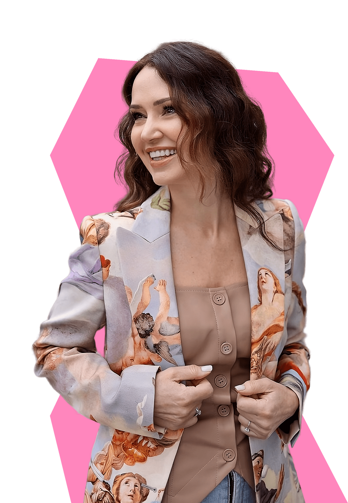

<!--DEV
@ @include('blocks/guest-expert/guest-expert.html')
-->

<section class="container  guest-expert">
  <div class="guest-expert__inner">
    <h2 class="guest-expert__title">Приглашенный эксперт</h2>

    <div class="embed-responsive embed-responsive--3-4  guest-expert__img">
      <picture>
        <source srcset="img/lyudmila-hariv.webp,
                        img/lyudmila-hariv.webp 2x" media="(min-width: 1280px)" type="image/webp">
        <source srcset="img/lyudmila-hariv.png,
                        img/lyudmila-hariv.png 2x" media="(min-width: 1280px)">
          <!-- 384x512, 768x1024 2x -->

        <source srcset="img/lyudmila-hariv.webp,
                        img/lyudmila-hariv.webp 2x" media="(min-width: 768px)" type="image/webp">
        <source srcset="img/lyudmila-hariv.png,
                        img/lyudmila-hariv.png 2x" media="(min-width: 768px)">
          <!-- 300x400, 600x800 2x -->

        <source srcset="img/lyudmila-hariv.webp,
                        img/lyudmila-hariv.webp 2x" media="(min-width: 360px)" type="image/webp">
        <source srcset="img/lyudmila-hariv.png,
                        img/lyudmila-hariv.png 2x" media="(min-width: 360px)">
          <!-- 264x352, 528x704 2x -->

        
      </picture>
    </div>

    <div class="guest-expert__text">
      <h3 class="guest-expert__subtitle">Людмила Харив</h3>
      <p class="guest-expert__intro">Алхимик нетворкинга!</p>
      <div class="guest-expert__content">
        <ul>
          <li>Опыт работы в сфере медиа более 15 лет: ведущая прямых эфиров, авторских передач и других форматов медийной журналистики.</li>
          <li>Более 13 лет опыта работы с топовыми политиками Украины, в качестве советника по коммуникациям.</li>
          <li>Экс-Советник: Президента; Вице-премьер-министра; Секретаря РНБО; Министра здравоохранения.</li>
          <li>Вот уже 4 года преподаватель в двух Национальных университетах Украины на факультетах журналистики (сейчас онлайн).</li>
          <li>Автор курсов: «Нетворкинг», «Нетворкинг в публичных профессиях», «Харизма», «Ораторское мастерство».</li>
        </ul>
        <p>Помогает людям усилить свои коммуникационные способности и зажечь лампочку харизмы. Превратить контакты в золотой ресурс! Людмила превращает умение общаться в такой же ресурс, как здоровье, финансы или образование. Она создала обучающие курсы, которые доступно встраивают знания и навыки в повседневную жизнь.</p>
      </div>
    </div>
  </div>
</section>
